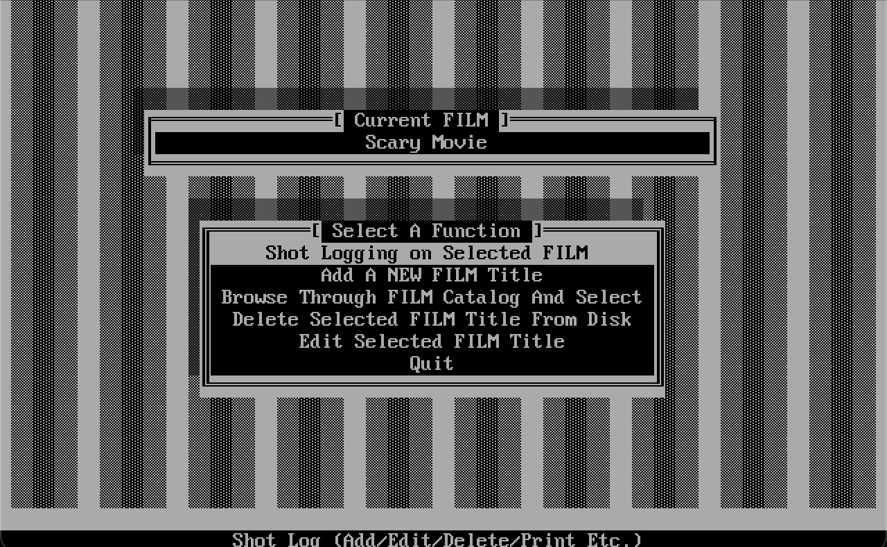
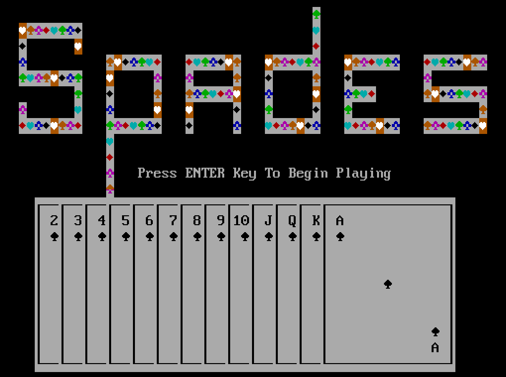
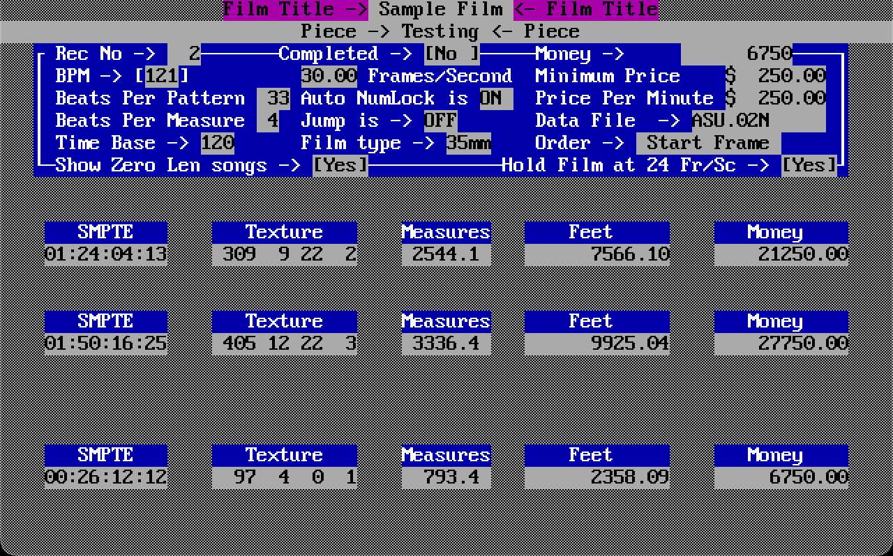

Nine Grammys · Engineer since 1971 · Programming since 1984
Five decades of records that had to hold up.
From 1986 through 2007 I engineered nearly every Asleep At The Wheel record — nine Grammys and a wall of platinum came out of that run. Around it: three hundred or so other artists, sound on a handful of films, and a stack of sample libraries other people's records got made on.
Three long conversations about how the work gets done.
Feel First
Why feel comes first, what a live audience does to a performance that a studio cannot, and how much automation you can add before you lose the thing you were automating.
The Frontier Beyond Fear
Music, inspiration, and where ideas actually come from. A long, wandering one.
The Genna Effect
Engineering and A Course in Miracles, which I have been studying since 1988, and where the two meet.
What is actually on the resume.
Nine Grammys
Earned on Asleep At The Wheel records between 1986 and 2007, several of them for Best Country Instrumental — “Sugarfoot Rag,” “Red Wing,” and “Hightower” among the winners.
Also a nomination for Best Country Album on Ride With Bob (2000), which I engineered and mixed with Ray Benson.
Programming since 1984
MIDI and code both came into my life in 1984, and neither left. I wrote the business and studio side myself — Lotus 1-2-3, dBASE II and III, Clipper, Force (a compiled dBASE III / DB3 compiler), C — while I sequenced on Texture from Magnetic Music for years, then Logic, Cubase, Nuendo, and finally REAPER, where I live now. (I owned Pro Tools for a couple of years and barely touched it.) In 1990 I wrote XREF (Film Conforming Cross Referencing Program) for Seyerworks Software — Copyright 1990 — shot logging and a film catalog on that same Force stack. Then the DOS card game Spades entirely in Force — public domain, beta 0.24 dated 11-28-91. Same stack produced ASU (Arranger’s Scoring Utility) for Seyerworks Software — version 0.2N, compiled April 19, 1993 — a film scoring utility that worked SMPTE, Texture measures, feet, money, and 35mm. Today it is C++ and JUCE instruments and REAPER scripts. Same ear, pointed at software.



Records
Roughly three hundred Texas and national artists since 1971 — Asleep At The Wheel, George Strait, Willie Nelson, Dolly Parton, Lyle Lovett, Don Walser, Manhattan Transfer, Huey Lewis. I produced, engineered, arranged and played rhythm guitar on the Dixie Chicks’ Little Ol’ Cowgirl in 1992. That record put drums in the band for good — Tom Van Schaik played them, I recorded them — which is not what a bluegrass-rooted band did. Christmas Swing I recorded and produced.
I hired Lloyd Maines to play steel on that record. He played on the next one too and kept working with the band, and in 1995 his daughter Natalie became its lead singer — a longer consequence than a session hire usually has.
Sample libraries
I recorded GigaPiano I and II for Nemesys, who produced and programmed them. Then came my own GigaStudio libraries — the Acoustic Bass with Spencer Starnes, and Larry Seyer Acoustic Drums with Pat Mastelotto. They ended up in Stevie Wonder’s and Hans Zimmer’s studios.
In 2007 TASCAM and Larry Seyer Digital put out POWERkits, Volumes 1–3: the same drum sound, without a dedicated computer to run it. Twenty-eight of my packs are on Pianobook, free.
Film and television
Re-recording mixer on Before Sunrise (1995) and SubUrbia (1996), foley mixer on Texas Chainsaw Massacre: The Next Generation (1994), sound mixer on Confessions of a Serial Killer (1985). Also the temp mix on Dazed and Confused (1993) — temp mixes do not get credits, which is why that one turns up on no list.
Composer on French Quarter Undercover (1985), A Fight for Honor (1992), and the Dream House series (2000); eight film scores in all, plus national TV and documentaries. Music engineer and score mixer on the IMAX film Ride Around the World (2006), and both score — written with Bill Ginn and Spencer Starnes — and mix on a feature made for Big Bend National Park.
I recorded and mixed the music for Wild Texas Wind, the NBC movie that aired September 23, 1991, and did the TV score with Ray Benson. Dolly Parton starred with Gary Busey and Benson, Joan Tewkesbury directed, and Willie Nelson turned up in a cameo. Parton and Benson wrote the songs. I am not in the credits.
Sound supervisor on Animusic, Animusic 2, and Animusic HD. Title music arranger on Red Wing (2013).
Live and broadcast
Concerts and events, and a weekly show I run out of my own room to three platforms at once with nobody else in the building.
The rooms, the chains, and the software.
The software
Pro Tools, REAPER, and Logic Pro. Enough hours inside REAPER to start writing software that extends it.
Signal processing
Analog and digital, and the hardware to go with it. I design analog audio circuits and program synths when a session needs something that does not exist yet.
Rooms
Acoustic design and room treatment. Getting a room to tell you the truth is most of the job.
Broadcast
Real-time audio for streaming and television, at latencies low enough to play against.
Surround and immersive
Multi-channel and immersive mixing for film, music, and spatial work.
The records and the book with my name on the front.
Elixirs for the Human Heart
My own album, 2007.
Ra’s Pyramid — Ascension
The duo with Marta Waterman. Atmospheric and instrumental. Visit the site →
There’s Only ONE of Us Here
My book, 2018, out of thirty years with A Course in Miracles.
What other people wrote down.
TASCAM, 2007
“The Making of Larry Seyer Acoustic Drums.” How a cold call to Nemesys turned into GigaPiano, the Acoustic Bass, and ninety CD-ROMs of drums with Pat Mastelotto. Archived copy.
Mix, 2000
The Ride With Bob sessions at Bismeaux, the room Ray Benson and I put together. Ray calls me an engineer, guitar player, singer — and a computer programmer.
Mix, June 2005
The Larry Seyer Acoustic Drums ad, back when the library needed its own computer. Full-issue PDF.
Synthtopia, 2007
TASCAM announces POWERkits — the same drum sounds, without the dedicated machine.
The FADER, 2013
Pure X on mixing and mastering Crawling Up the Stairs — mixed in three days, mastered in one.
The Milkmen, 2019
“Demystifying Dairy Aire.” Making the record in Austin, from the band’s side of the glass.
Gary Powell, 2008
“Thirty Years with Larry Seyer.” We both landed at Wink Tyler’s Austin Recording Studio in 1978.
Tom Parish, Feel First
The written companion to our conversation on live performance, and why feel comes first.